Datenmodell¶
Interne Modell-Klassen (core/model.py)¶
LucentTools DB Explorer arbeitet mit einem rein im Speicher gehaltenen Modell der Datenbankstruktur. Es gibt keine persistente eigene Datenbank — alles wird bei jedem API-Aufruf frisch aus der Zieldatenbank reflektiert.

Schema¶
Das Wurzelobjekt nach einer Reflection-Operation. Enthält:
tables: tuple[Table]— alle reflektierten Tabellenviews: tuple[View]— alle reflektierten Viewstriggers: tuple[Trigger]— reflektierte Trigger (AP-63·S2 + Trigger-FF; SQLite/PG/Oracle/MSSQL via Pro-Dialekt-Katalog-SQL)sequences: tuple[Sequence]— reflektierte Sequenzen (AP-63·S2b; PG/Oracle/MSSQL; nur SQLite → leer)materialized_views: tuple[View]— reflektierte Materialized Views (AP-63·S2b; nur PG/Oracle), reusen dasView-Shaperoutines: tuple[Routine]— reflektierte Routinen: Procedures, Functions, Packages (AP-63·S3; nur PG/Oracle/MSSQL)synonyms: tuple[Synonym]— reflektierte Synonyme (AP-63·S3; Oracle + MSSQL seit AP-67·MSSQL-Grundlage v0.60.0)has_column(table, column)— Validierungsmethode für API-Aufrufecross_schema_fks(current_schema)— FK-Kanten über Schema-Grenzen (AP-54-Diagnose)
Table¶
| Attribut | Typ | Beschreibung |
|---|---|---|
name |
str |
Tabellenname |
columns |
tuple[Column] |
Alle Spalten |
foreign_keys |
tuple[ForeignKey] |
Deklarierte FKs |
primary_key |
tuple[str] |
Primärschlüssel-Spaltennamen |
unique_constraints |
tuple[tuple[str]] |
UNIQUE-Constraints (Spalten je Constraint) |
unique_indexes |
tuple[tuple[str]] |
voll-spaltige, nicht-partielle Unique-Indizes (1-1-Erkennung) |
comment |
str |
Tabellenkommentar (Tier-2) |
indexes |
tuple[Index] |
alle Indizes für die Detail-Anzeige (AP-63·S1) |
check_constraints |
tuple[CheckConstraint] |
Check-Constraints (AP-63·S1) |
Column¶
| Attribut | Typ | Beschreibung |
|---|---|---|
name |
str |
Spaltenname |
type |
str |
Datentyp als String (z. B. INTEGER, VARCHAR) |
ForeignKey¶
Trägt ein oder mehrere Spaltenpaare — einspaltige und zusammengesetzte (composite) FKs haben dieselbe Form.
| Attribut / Property | Typ | Beschreibung |
|---|---|---|
ref_table |
str |
Referenzierte Tabelle |
column_pairs |
tuple[tuple[str, str], ...] |
(Quellspalte, Zielspalte)-Paare; 1 = einspaltig, n = composite |
columns |
tuple[str, ...] |
Quellspalten (Property) |
ref_columns |
tuple[str, ...] |
Zielspalten (Property) |
is_composite |
bool |
True bei mehr als einem Paar (Property) |
ForeignKey.single(column, ref_table, ref_column) baut einen einspaltigen FK.
Ein composite FK wird als JOIN … ON a.x = b.x AND a.y = b.y gejoint; zwei
separate einspaltige FKs zwischen denselben Tabellen bleiben alternative
Join-Wege.
View¶
| Attribut | Typ | Beschreibung |
|---|---|---|
name |
str |
View-Name |
columns |
tuple[Column] |
Spalten |
definition |
str |
SQL-Definition (CREATE VIEW … AS …) |
routines |
tuple[str, ...] |
Namen reflektierter Routinen, die in der View-Definition aufgerufen werden (AP-66·S1); () wenn keine |
Materialized Views (AP-63·S2b) werden auf dasselbe View-Shape abgebildet (inkl. routines).
Index / CheckConstraint (AP-63·S1)¶
| Klasse | Attribute | Beschreibung |
|---|---|---|
Index |
name: str, columns: tuple[str], unique: bool |
Ein Index der Tabelle (read-only Anzeige); Expression-Indizes werden übersprungen |
CheckConstraint |
name: str ("" = unbenannt), sqltext: str |
Ein Check-Constraint der Tabelle |
Trigger / Sequence (AP-63·S2 / S2b)¶
| Klasse | Attribute | Beschreibung |
|---|---|---|
Trigger |
name: str, table: str, sql: str |
Trigger (Name, besitzende Tabelle, CREATE TRIGGER-Quelltext); read-only, keine Ausführung |
Sequence |
name: str |
Sequenz (nur Name) |
Routine / Synonym (AP-63·S3)¶
| Klasse | Attribute | Beschreibung |
|---|---|---|
Routine |
name: str, kind: str, sql: str |
Routine (Name, Art: procedure/function/package, Quelltext); read-only, keine Ausführung |
Synonym |
name: str, target: str |
Synonym (Name + Zielobjekt); read-only, Oracle + MSSQL (AP-67·MSSQL-Grundlage v0.60.0) |
Alle read-only Objekt-Kategorien (Index/Check/Trigger/Sequence/Materialized View/Routine/Synonym) nehmen nicht an Join-Pfaden oder SQL-Generierung teil — reine Anzeige.
AnalysisResult (AP-65·A / AP-65·A-Härtung)¶
Rückgabeobjekt von core/sqlanalyze.py::analyze und /api/analyze. Die ersten Felder existierten seit AP-25/39; AP-65·A ergänzt vier abschließende Positionsfelder für Parse-Fehler; AP-65·A-Härtung ergänzt zwei weitere Felder für präzisere Markierung und ehrliche Hinweise:
| Attribut | Typ | Beschreibung |
|---|---|---|
parse_error |
str \| None |
Parse-Fehlermeldung (gestrippter Text); None bei Erfolg |
parse_error_line |
int \| None |
Zeilennummer des fehlerhaften Tokens (1-basiert); None wenn nicht ermittelbar (AP-65·A) |
parse_error_col |
int \| None |
Spaltennummer des fehlerhaften Tokens (1-basiert); None wenn nicht ermittelbar (AP-65·A) |
parse_error_context |
str |
Kontext-Ausschnitt rund um das fehlerhafte Token; "" wenn nicht verfügbar (AP-65·A) |
parse_error_highlight |
str |
Das fehlerhafte Token selbst (für die rot markierte .an-err-mark-Darstellung); "" wenn nicht verfügbar (AP-65·A) |
parse_error_highlight_pos |
int |
Kontextrelativer Index des markierten Tokens im Kontext-Ausschnitt (AP-65·A-Härtung); ersetzt die alte indexOf-Erstvorkommens-Logik, die bei wiederholten Zeichen falsch markierte; -1 wenn unbekannt/keine Position |
parse_error_hint |
str |
Optionaler Hinweis-Text unterhalb des Kontext-Ausschnitts (AP-65·A-Härtung); bei nicht geschlossenem/verschobenem Anführungszeichen weist er darauf hin, dass die eigentliche Ursache früher liegen kann; "" wenn kein Hinweis nötig |
ParseError wird über sqlglots .errors[0] aufgelöst (strukturierte Position). TokenError (z. B. nicht geschlossenes String-Literal) leitet die Position best-effort aus dem konsumierten Präfix in der Fehlermeldung ab; für den Unclosed-Quote-Fall lokalisiert _unclosed_quote_offset(sql) das offen gebliebene Anführungszeichen. AP-65·A-Härtung 2: weicht die tatsächliche Fehlerzeile davon ab, wird sie über _odd_quote_line(sql, quote_char) (einzige Zeile mit ungerader Quote-Anzahl) bestimmt und _parse_error_location leitet die Position dorthin um — mit parse_error_col=None, parse_error_highlight="", parse_error_highlight_pos=-1 (ein fehlendes Quote hat keine exakte Position) und einem parse_error_hint, der die Zeile nennt. /api/analyze serialisiert alle sechs Felder; die UI zeigt „Parse-Fehler in Zeile N, Spalte M:" (bzw. nur „Zeile N:", wenn keine Spalte vorliegt) + Kontext mit markiertem Token + optionalem Hint-Text, fällt auf den Zeichenketten-Fallback zurück wenn keine Position verfügbar.
AP-65·C — Zeilenbezug an Lints: AnalysisWarning und AnalysisSuggestion erhalten je ein
Feld line: int | None — die 1-basierte Quellzeile der auslösenden Stelle, über
_node_line(node, sql) aus dem frühesten positionierten sqlglot-Nachfahren (meta['start'])
bestimmt, oder None für Meldungen der Statement-Ebene (WRITE_STATEMENT/NO_WHERE/…).
/api/analyze serialisiert line je Warnung/Vorschlag; die UI stellt solchen Meldungen
„Zeile N:" voran und markiert per Klick die Zeile im Eingabefeld (AP-65·B-Gutter).
FK-Graph¶
Der FK-Graph (core/graph.py) ist ein gerichteter NetworkX-Graph:
- Knoten — Tabellennamen
- Kanten — Foreign-Key-Beziehungen (gerichtet: Quell-Tabelle → Ziel-Tabelle)
- Kantenattribut
implied—Truefür heuristisch erkannte FKs
Der Graph wird bei jedem /api/graph- und /api/joinpath-Aufruf neu gebaut.
Er enthält keine Views — nur Tabellen mit FK-Beziehungen.
API-Ausgabeformat: /api/schema¶
{
"tables": [
{
"name": "orders",
"columns": [
{"name": "id", "type": "INTEGER", "pk": true},
{"name": "customer_id", "type": "INTEGER", "pk": false}
],
"foreign_keys": [
{"columns": ["customer_id"], "ref_table": "customers", "ref_columns": ["id"]}
],
"indexes": [
{"name": "ix_orders_customer", "columns": ["customer_id"], "unique": false}
],
"check_constraints": [
{"name": "ck_total", "sqltext": "total >= 0"}
],
"ddl": "CREATE TABLE orders (...)"
}
],
"views": [
{"name": "active_orders", "columns": [...], "definition": "SELECT ... FROM orders WHERE ...", "routines": []}
{"name": "mv_enriched", "columns": [...], "definition": "SELECT fn_get_status(...) ...", "routines": ["fn_get_status"]}
],
"triggers": [
{"name": "trg_orders_audit", "table": "orders", "sql": "CREATE TRIGGER ..."}
],
"sequences": [{"name": "orders_id_seq"}],
"materialized_views": [
{"name": "mv_sales", "columns": [...], "definition": "SELECT ..."}
],
"procedures": [{"name": "sp_refresh", "sql": "CREATE PROCEDURE ..."}],
"functions": [{"name": "fn_total", "sql": "CREATE FUNCTION ..."}],
"packages": [{"name": "pkg_util", "sql": "CREATE PACKAGE ..."}],
"synonyms": [{"name": "emp", "target": "hr.employees"}]
}
Die Felder triggers/sequences/materialized_views sind je nach Backend leer
([]): Trigger SQLite/PG/Oracle/MSSQL (AP-63·S2 + Trigger-FF), Sequences PG/Oracle/MSSQL
(AP-63·S2b; nur SQLite → leer), Materialized Views nur PG/Oracle. Die Felder
procedures/functions/packages/synonyms sind je nach Backend leer ([]):
Routinen nur PG/Oracle/MSSQL, Synonyme Oracle + MSSQL (AP-63·S3; MSSQL-Synonyme
via sys.synonyms seit AP-67·MSSQL-Grundlage v0.60.0). Das Feld routines auf
jedem View-/Matview-Eintrag ist [], wenn die View keine reflektierten Routinen
aufruft, oder keine Routinen vorhanden sind (AP-66·S1).